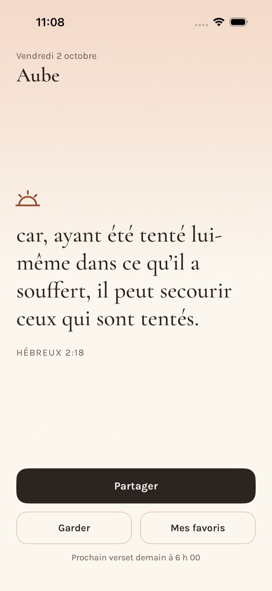

Avant le reste de la journée, un verset vous attend.
Aube vous envoie un seul verset par jour, tôt le matin. Vous l’ouvrez, vous le lisez, et la journée commence.

Un an de matins.
365 versets, un par jour. Rien à choisir, rien à rattraper : seulement celui d’aujourd’hui.
Venez à moi, vous tous qui êtes fatigués et chargés, et je vous donnerai du repos.
Je puis tout par celui qui me fortifie.
Au commencement, Dieu créa les cieux et la terre.
Celui qui n’aime pas n’a pas connu Dieu, car Dieu est amour.
Gardez ceux qui vous parlent. Offrez-les à quelqu’un.
Un geste pour ranger un verset dans vos favoris. Un autre pour l’envoyer, sous la forme d’une image prête à partager.
Rien d’autre que le verset.
- Pas de compte
- Vous ouvrez l’app, elle fonctionne. Aucune inscription, aucun mot de passe.
- Aucune donnée collectée
- Aube ne se connecte jamais à Internet. Vos favoris restent sur votre iPhone.
- Gratuite
- Sans publicité et sans achat intégré.